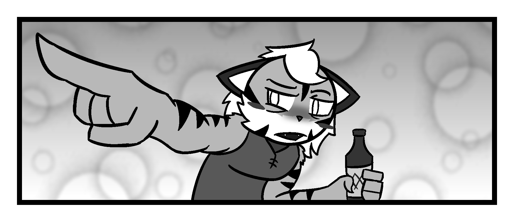
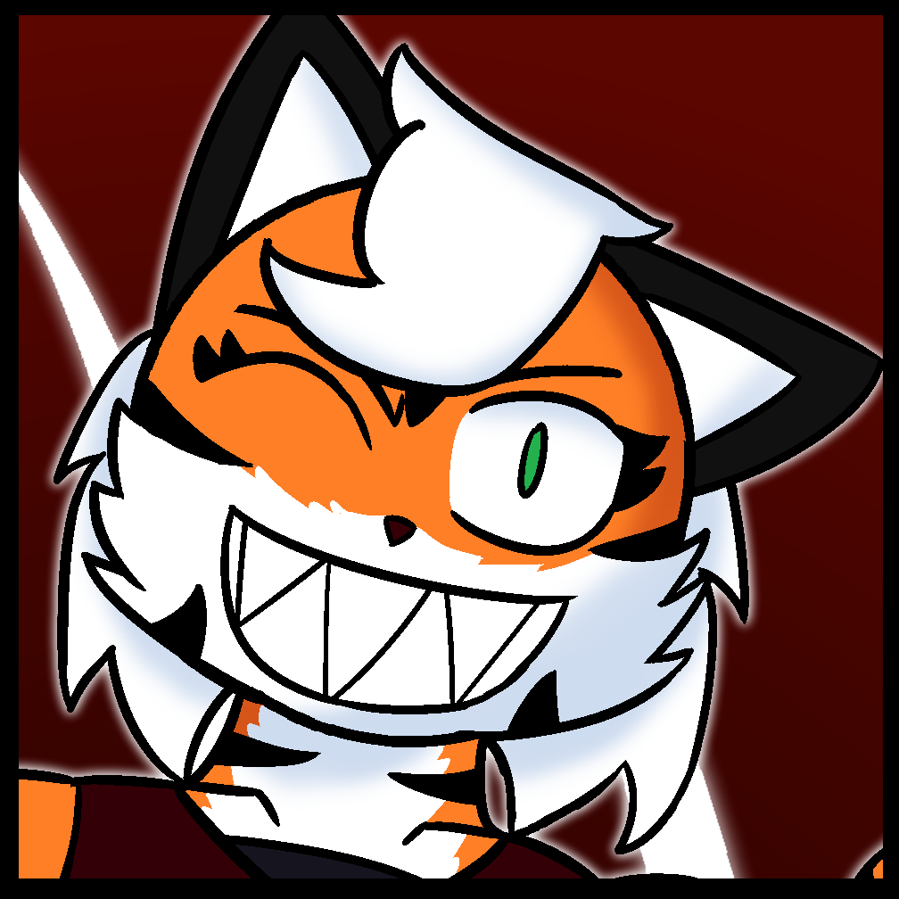
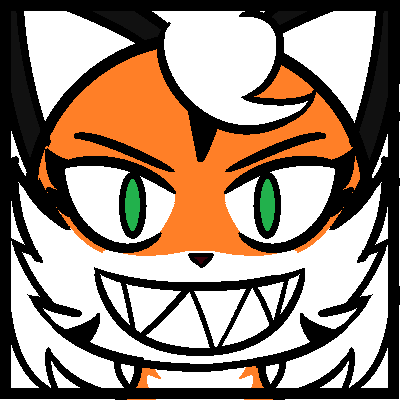

For our last month of freedom, we have one of the favorites out of the characters that I've created...Tora!
Quick little recap again, Tora's a tigeress who works as a mercenary for a very powerful and influential organization.
Due to her terrifying strength, agility, skills and brash carefree nature, she's usually the best at what she does and boy, does she love doing it.

Tora is the rep for this month for the same reason as Jodan. Her canonical birthday takes place at the start of this month and
with it came a special mini comic themed around just exactly that. When Tora thinks that her friends forgot her birthday, she
starts drinking heavily, which is bad because she is already an alcoholic. What happens next you might ask? Well, why not check it
out for yourself by clicking the link below!
 "Curious about my birthday ,huh? |
 "Or you can just #$%^in' leave too, |